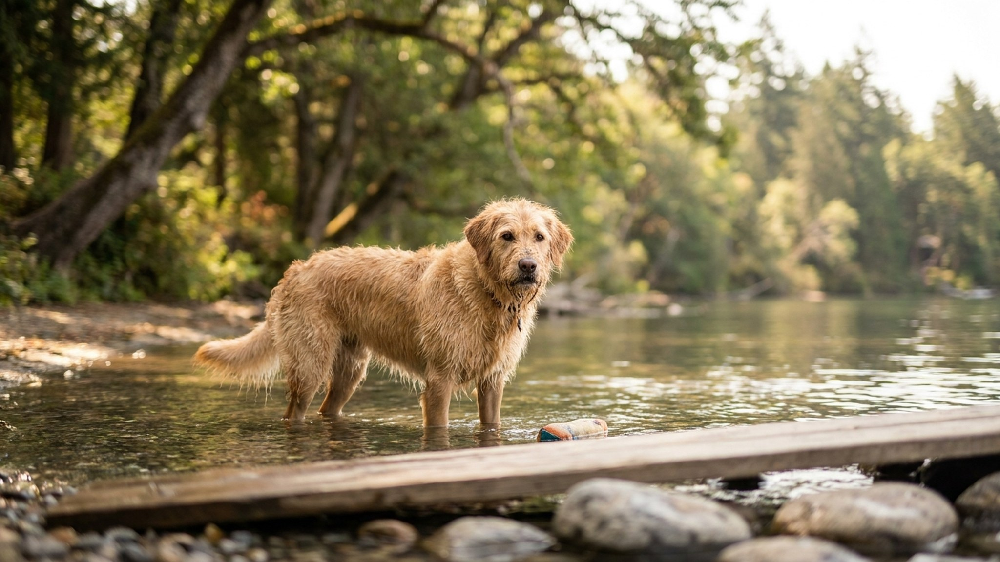

Не все собаки умеют плавать от природы — и не все, кто умеет, делают это безопасно. Хлор в бассейне, цианобактерии в российских водоёмах летом 2026, сильное течение, вода в ушах — реальные риски, которые стоит знать до первого купания. Разбираем всё: от выбора места до того, как правильно вытереть собаку после заплыва.
🐾 Дневник здоровья питомца — в кармане
Вес, прививки, симптомы и напоминания в одном приложении. AnimaLife следит за здоровьем питомца вместо вас.
Миф: «Все собаки умеют плавать инстинктивно». Это не так. Инстинкт «гребли» есть у большинства собак — при попадании в воду они начинают перебирать лапами. Но держаться на воде способны не все.
Породы с высоким риском утопления:
Природные пловцы — лабрадор-ретривер, золотистый ретривер, португальская водяная собака, ирландский водяной спаниель, новфаундленд, флэт-коатед ретривер. У них перепончатые лапы, водоотталкивающая шерсть и правильное распределение массы тела.
Инстинкт «гребли» включается автоматически при попадании в воду. Но это не то же самое, что умение плавать. Необученная собака в воде тратит слишком много энергии на вертикальную греблю, быстро устаёт и паникует. Паника → неритмичные движения → захлёстывает воду → стресс → выбивается из сил.
Обученная собака знает, как входить в воду, как выходить, умеет плыть горизонтально и экономично, не паникует при попадании воды на морду. Разница принципиальная, особенно в нестандартных ситуациях.
Спасжилет для собаки — не паранойя. Он нужен в следующих случаях:
Критерии выбора жилета: плавучесть по весу собаки, ручка сверху для подъёма из воды, застёжки на животе и груди (не только на спине), яркий цвет. Проверьте жилет в мелком месте до первого серьёзного заплыва — убедитесь, что собака не запрокидывается назад.
Никогда не бросайте собаку в воду «пусть научится сама». Это приводит к стойкой водобоязни. Приучение — постепенное, всегда на позитиве.
Если собака боится — не форсируйте. Некоторым нужны недели. Это нормально.
Цианобактерии (сине-зелёные водоросли) — главная угроза пресных водоёмов в России в летний период. В 2025 году вспышки цианобактерий зафиксированы в Подмосковье, Ленинградской, Воронежской, Краснодарском крае и других регионах. Цветение воды — зелёная, голубоватая или бурая плёнка на поверхности, неприятный запах.
Токсины цианобактерий (микроцистин и другие) вызывают у собак острое поражение печени и нервной системы. Смерть может наступить в течение нескольких часов после заглатывания воды. Признаки: рвота, слабость, судороги, пожелтение слизистых. При подозрении — немедленно в клинику.
Хлор в бассейне. Бассейны с повышенным содержанием хлора раздражают слизистые глаз, носа и желудка у собак. Разовое купание обычно безопасно, систематическое — нет. После бассейна обязательно ополаскивайте собаку пресной водой. Не позволяйте пить воду из бассейна.
Морская вода. Небольшое заглатывание — не критично. Большой объём — риск гипернатриемии (избыток соли). Признаки: сильная жажда, рвота, нарушение координации. На море всегда берите с собой пресную воду и следите, чтобы собака не пила из моря.
Течение. Быстрое течение опасно даже для хороших пловцов. Собака не умеет плыть против течения — её сносит, она паникует и выбивается из сил. Не отпускайте собаку в реки с заметным течением без контроля.
Собаки заглатывают воду при активном плавании с открытой пастью — при игре с мячом или палкой в воде. Большой объём воды в желудке разбавляет электролиты и может вызвать «водное отравление» (гипонатриемия) — редко, но смертельно опасно.
🐾 Не уверены, что это опасно?
Опишите симптом в AnimaLife — AI-ветеринар за минуту подскажет, что в пределах нормы, а когда пора к врачу.
Уши. Самое важное — осушить уши. Вода в ушном канале создаёт идеальную среду для размножения бактерий и дрожжей. Отит наружного уха — частейшее последствие купания. После каждого купания:
Шерсть. После пресного водоёма или пляжа — вычешите шерсть, когда высохнет, или смойте дополнительно. Грязь и органика в шерсти провоцируют кожные проблемы. После морской воды — обязательный душ с пресной водой, соль сушит кожу и раздражает её.
Плавание — одна из лучших физических нагрузок для собак: суставы не нагружаются, работают все группы мышц. Но нагрузку увеличивают постепенно.
После плавания собака должна активно двигаться или лежать в тёплом месте, чтобы быстро согреться. Не давайте мокрой собаке лежать на холодном полу или сквозняке.